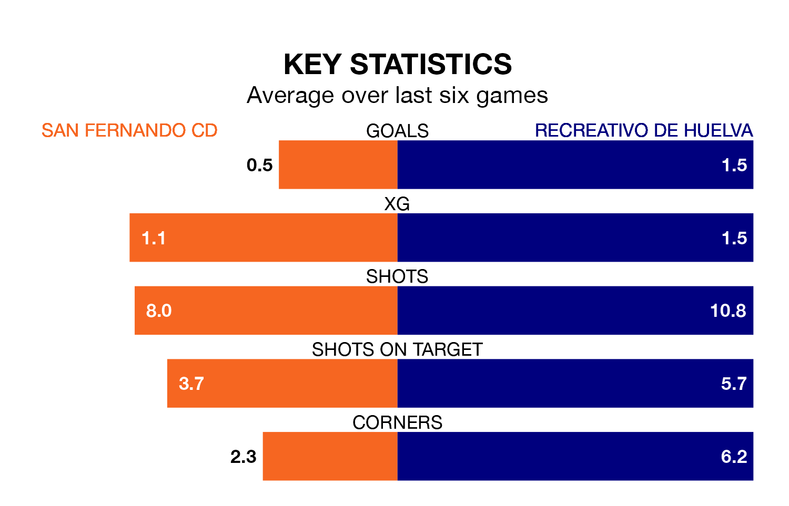

Recreativo de Huelva travel to San Fernando CD on late Sunday in Primera Division RFEF Group 2.
The visitors come into the game on the back of a win in their last match, having beaten UD Melilla 2-0 at home, with goals from Caye Quintana.
San Fernando CD, meanwhile, lost their last match, 3-0 against Real Murcia.
In the last 10 years, San Fernando CD and Recreativo de Huelva have played each other on 11 occasions. San Fernando CD won four of them, Recreativo de Huelva five, and they drew twice.
On average, San Fernando CD scored 1.1 goals and Recreativo de Huelva 1.2 in those matches.
Their last meeting was on November 4, when Recreativo de Huelva won 1-0 at home.
With 24 goals in 22 games so far this season, San Fernando CD are scoring at the league's average rate with 1.1 goals per game. And they are conceding more than average, letting in 29 goals at a rate of 1.3 per game.
Recreativo de Huelva are also average scorers, with 1.1 goals per game. They have conceded 0.9 goals per game.
The visitors are fifth in the table after 22 games, of which they have won 11 and drawn six, earning 39 points.
The home team are 10 places behind Recreativo de Huelva in 15th, with seven wins and four draws putting them on 25 points.
San Fernando CD are in disappointing form in Primera Division RFEF Group 2, with one win and two draws from their last six games.
With four wins and a draw over that period, Recreativo de Huelva's form is much better – they have taken 13 points from 18, compared to San Fernando CD's five.
Updated: 10:01 (UTC), 06/02/24